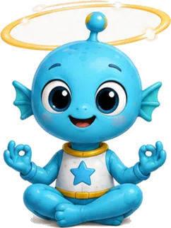
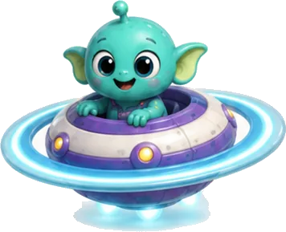
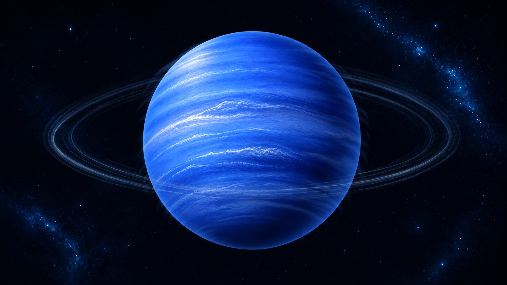
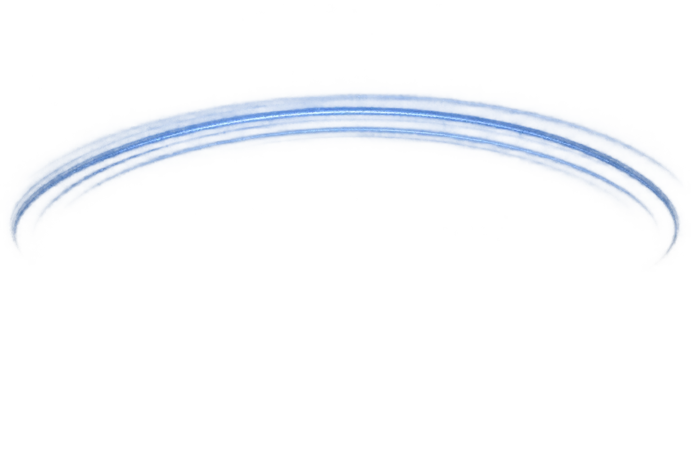
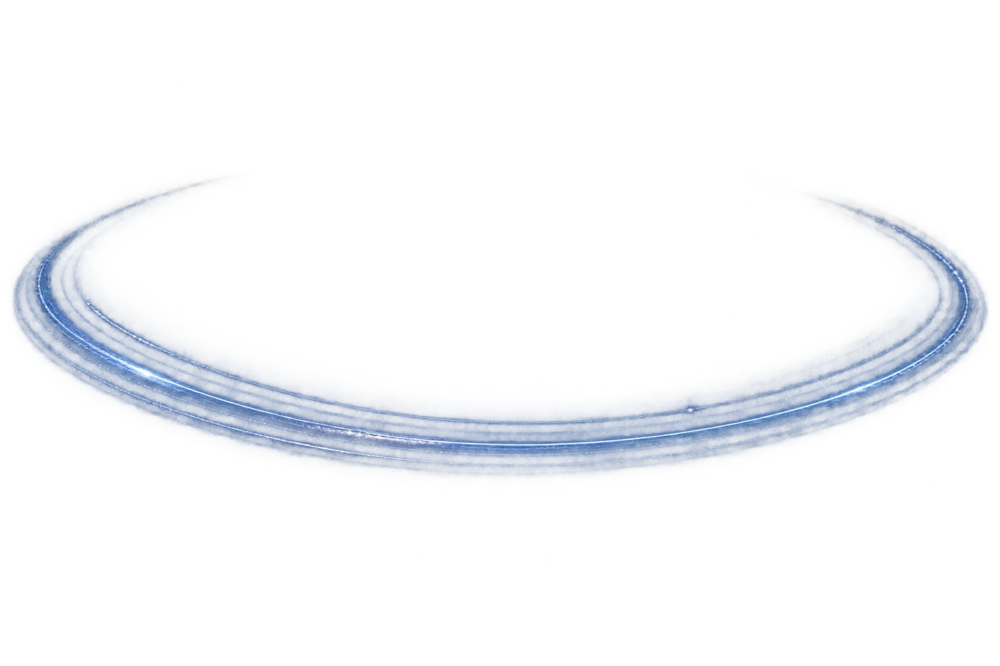
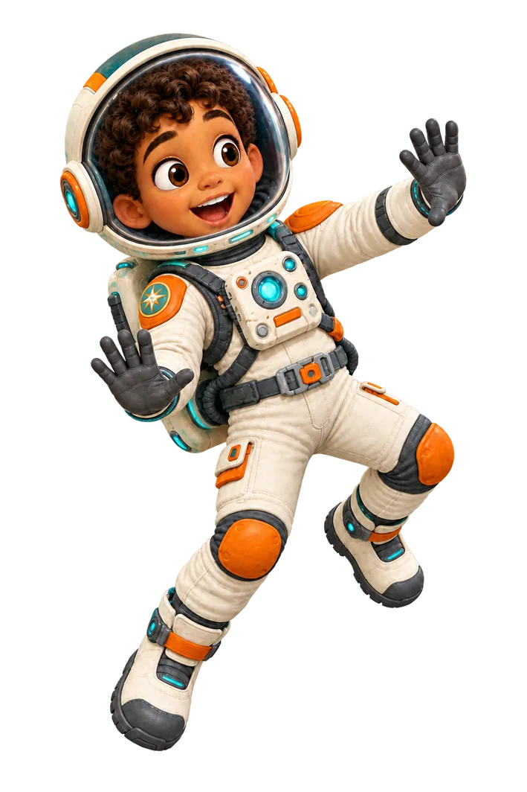
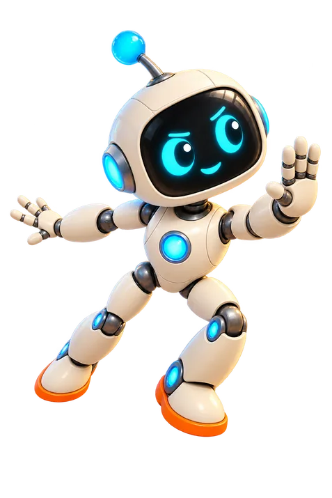

Page 17 · The windy blue world
Neptune
Deep-blue Neptune is the farthest major planet from the Sun. Fierce winds race through its atmosphere, and its dark storms can appear and then fade away.



Tap a sparkling star on any page to meet a space friend and keep their sticker.



Deep-blue Neptune is the farthest major planet from the Sun. Fierce winds race through its atmosphere, and its dark storms can appear and then fade away.







Tap the diagram to replay its motion. Diagrams are explanatory and not to scale.